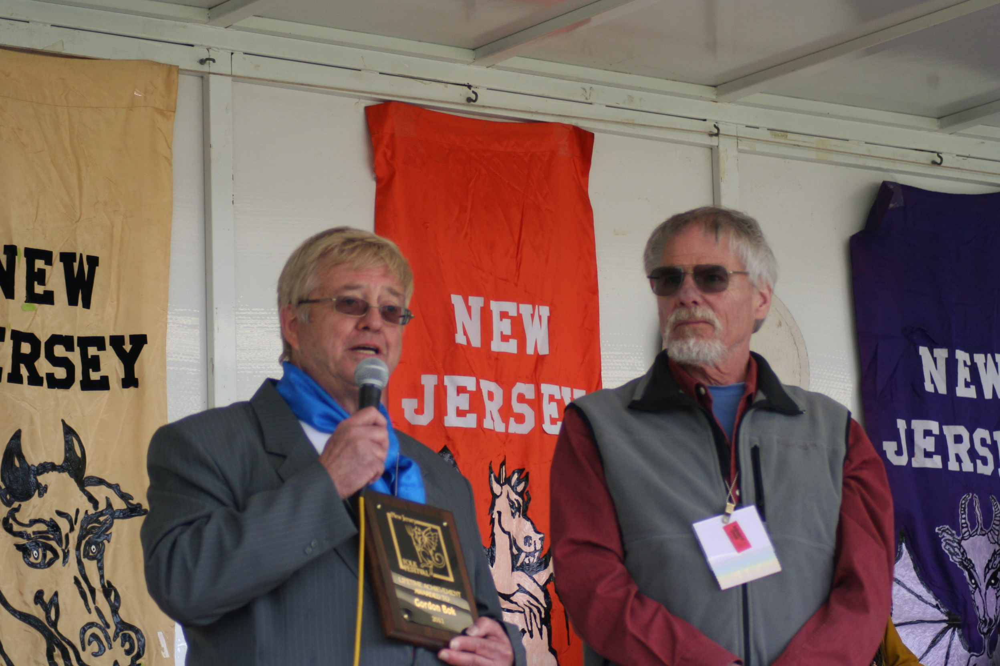

Kalmyk files for downloading.
Kalmyk Book 1 (written music and some translations) Book 1 Audio filesHere is a small book of simple Kalmyk songs and tunes with samples of the originals, just some of the music your elders brought with them when they came to America in the 1950s and 1960s
When I came to work in Philadelphia in the 1960s, your folks took me in and made me part of their musical community. They gave me most of this collection during those years. The entire collection now consists of ten CDs (catalogued) and some written song lyrics; various people in your communities have copies of some or most of the collection. Eventually we hope to have the whole collection available for download.
These songs have wandered through many different countries for many years, and each place left its mark on each song, so any Kalmyk song can be performed in many different ways. We’ve tried to show some of those different ways here.
The language has been changing all this time, too. Many of the words in the songs are no longer in use, so any translations involve a certain amount of guess-work . As Gawril Budschalow said, “If you got a hundred Kalmyks to translate one song, you’d have a hundred translations.” We have come to understand this: There is NO right or wrong way to do this music. The only way you can hurt it is not to sing it.
Some of the people who have made this book possible are Gawril and Allison Budschalow, Alex and Sara Goripow, Lidia and Gerel Buruschkin, Ginger Hildebrand and especially Nadja Stepkin Budschalow, who kept so many songs alive and taught us how to sing them.
For 400 years, without a homeland, Kalmyks have kept their language, legends, epics songs and religion alive: that’s an amazing achievement. This is great, powerful music, unique in the world.
~ Gordon Bok
Lifetime Achievement Award

Brunswick NJ for immediate release - Folksinger Gordon Bok was recently honored at the New Jersey Folk Festival in New Brunswick, New Jersey with a Lifetime Achievement Award for his many years collecting and preserving the folk music of the Kalmyk people.
The annual New Jersey Folk Festival highlights the culture, traditions, food, crafts, and music from a specific heritage or nation. This year they featured the folk culture of the Kalmyks, showcasing many individuals and groups of nearby Kalmyk communities in the New Jersey and Philadelphia area, who are celebrating 60 years in America this year.
The Kalmyks originated in the Western steppes of Mongolia. Despite a long history of oppression and forced emigration, they managed to keep much of their culture intact. Gordon met his Kalmyk neighbors when he was working in the Philadelphia area more than fifty years ago, and learned to play and sing some of their music. Realizing that they were losing their language and songs as they became more assimilated, he began helping them collect and preserve what they still had, including some of their Buddhist liturgy. With their help, Gordon recorded many Kalmyk songs, sending tapes to the Library of Congress for preservation, and has recently put together a small book of melodic songs and tunes from the original collection written out phonetically with an accompanying CD. The entire collection is now being circulated among their descendants.
"It was great to connect with Kalmyk friends old and new and enjoy the musicians and dancers that have come out of the woodwork in recent years. It's heartwarming to know that some of the traditions are alive in the next generation. These photos will give you a flavor of the day." ~ Gordon
 |
 |
| Gordon with friend and fellow singer Gerel. | Gordon and Carol with friend Alta. |
 |
 |
| Gordon, Carol and Alta. | Gordon with one of the Kalmyk Bhuddist monks. |
 |
 |
| The dombr players were quite good. | |
 |
 |
| The children dancers were just delightful. |
Photo credit for all photos: Mike Power. Taken at the New Jersey Folk Festival 4/30/2011. Displayed by permission.
Kalmyk Music Project
Some of you know that I have had a musical association and friendship with some Mongolian immigrants spanning more than 50 years. They took me in when I needed it and their music became a great source of nourishment for me. In the 450 years since they wandered West out of Mongolia, they kept their language, customs and religion surprisingly intact. Over the years, their language has been deteriorating slowly but steadily, losing the older words and forms. In the 50 years of their sojourn in America, though, I have seen them lose many songs, dances, and even some of the lovely Buddhist liturgy they used to sing and chant so well.
What I've been trying to do in some spare time in the last 10 years, is to make what I have left of the music they shared with me available to them, when or if they need it. I've had great help and encouragement from Kalmyk (and other) friends, but none of us are trained in what we are trying to do, so it's slow plowing and often a pretty crude furrow.
Anyroad, that's what I'll be doing this fall, working with them in DC, PA, and NJ, and taking the occasional concerts around those times that I know I will enjoy, and that will help pay for the penthouse suites and the Barnegat Bay Caviar, etc., etc.
An Abridged History and Description of the Gordon Bok Collection of Kalmyk Music
In the 1960s and '70s I spent the winter months working in Phladelphia. During that time I spent a lot of time singing with Kalmyk friends and playing in their small "orchestra" for dance performances. In the course of this I made some amateur recordings, and Kalmyks and other people, seeing my interest, gave me some of their recordings. I gave those recordings to the Library of Congress when I left Philadelphia around 1975, for them to copy. That was useful, as I lost the originals in my relocations over the years.
When the Kalmyks invited my wife and me to the 50th anniverary of their emigration to America I realized that no one had been keeping the dances and songs alive amongst my Philadelphia friends. So, In 2001, I managed to retrieve a set of DATs of my recordings from the Library of Congress, and I sent copies to some Kalmyks.
In 2003, I had Maine Folklife Center clean the recordings up as best they could. I catalogued them as well as I could from memory, my notes, and the songs in my written collection. I have made copies of these recordings, the catalog and the written collection for any interested Kalmyk families.
Since 2005, I have continued my visits whenever my tours took me through the Philadelphia/NJ area, recording, cataloging and getting translations when I could. About this time we conjured the idea of making a simple music book that Kalmyks in this country, or anyone else who spoke only US English, could use to access the collection.
That project -- Kalmyk Music In America - Book One -- became a small, 3-ring-binder-form book with tune and words written in basic form, using a phonetic system that I cobbled together from various people's attempts. I only included songs that I had sung and could remember words and tune as my friends had taught them to me. For every song in there, we have examples on an accompanying CD. We have tried to include more than one version of each piece when possible. Book One is all in computer files and we have been sharing those files and original collection with any interested Kalmyks.
Some thoughts about the book:
The tunes are not written down as they were sung. They are a melodic sketch and you must go to the originals in the collection to sing them as they were really sung. (No one in this project knows how to annotate these things accurately, but we are doing what we can.)
The songs in this book are newer Kalmyk songs that the people of my age-group were singing. The old, long-songs are represented in this collection, but we did not have the language or the musical sophistication to learn them.
We are currently working on a second book, hoping for help from musicologists and linguists to go deeper into the older songs and liturgy before this language and culture disappear altogether.